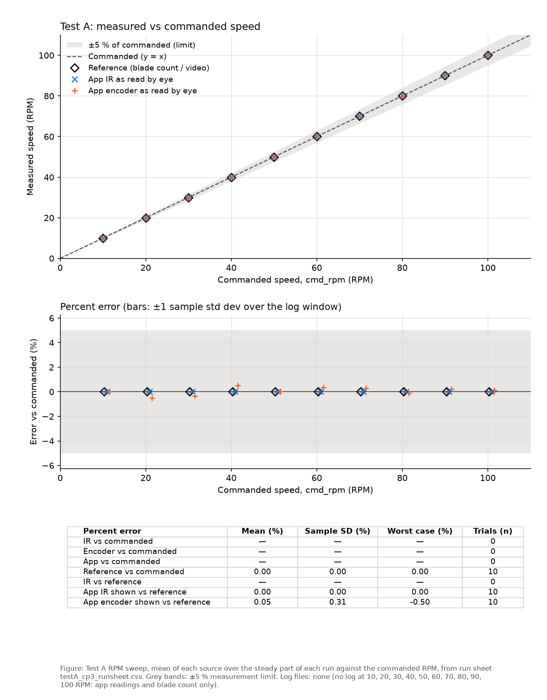
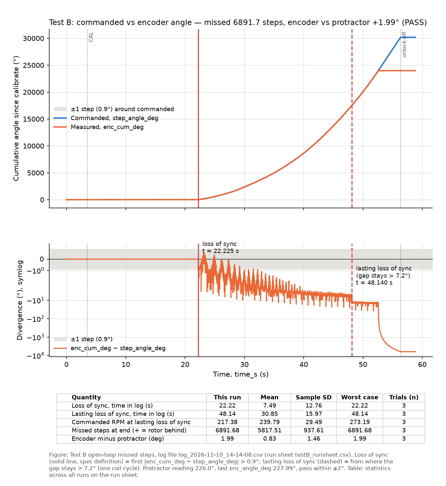

Tests
Each test compares what the program commands with what independent measurements show the propeller actually doing.
Test A at Checkpoint 3: through the app, 10 to 100 RPM
All 10 speeds within 5%
From Checkpoint 3 the speed is set from the iPhone app. At each speed from 10 to 100 RPM the team read the app's IR RPM and encoder RPM about 5 s after the start, and counted the marked blade for 30 s (by eye up to 70 RPM, from slow-motion video at 80–100 RPM). The peer check asks that the IR, the encoder and the blade count all agree within 5%.
| Commanded RPM | App IR RPM | App encoder RPM | Blade passes in 30 s | Reference RPM | Encoder vs reference | Result |
|---|---|---|---|---|---|---|
| 10 | 10.0 | 10.0 | 5 | 10.0 | 0.00% | Pass |
| 20 | 20.0 | 19.9 | 10 | 20.0 | −0.50% | Pass |
| 30 | 30.0 | 29.9 | 15 | 30.0 | −0.33% | Pass |
| 40 | 40.0 | 40.2 | 20 | 40.0 | +0.50% | Pass |
| 50 | 50.0 | 50.0 | 25 | 50.0 | 0.00% | Pass |
| 60 | 60.0 | 60.2 | 30 | 60.0 | +0.33% | Pass |
| 70 | 70.0 | 70.2 | 35 | 70.0 | +0.29% | Pass |
| 80 | 80.0 | 79.9 | 40 | 80.0 | −0.12% | Pass |
| 90 | 90.0 | 90.2 | 45 | 90.0 | +0.22% | Pass |
| 100 | 100.0 | 100.1 | 50 | 100.0 | +0.10% | Pass |

Results. The app's IR RPM matched the blade count at every speed. The encoder RPM was within 0.5% (mean +0.05%, sample standard deviation 0.31%, worst −0.50% at 20 RPM).
Measurement limit. One pass of the marked blade in 30 s is worth 2 RPM, so the count resolves ±20% at 10 RPM and ±2% at 100 RPM. The 0.00% IR errors are below what this reference can resolve. For the final writeup the team will log each speed and use longer counts or video frame counts at low speed.
Data. These results come from the app readings and counts on the run sheet. No logs were taken for this Test A sweep.
Test A at Checkpoint 2: IR RPM against commanded and counted RPM
Passed at Checkpoint 2
At about 30, 60 and 90 RPM the team recorded the IR reading 5 s after setting the speed, the highest and lowest IR readings over the next 10 s, and an independent reference: the marked blade counted over 30 s by eye, or from slow-motion video at 90 RPM. Reference RPM = marked-blade passes in 30 s × 2.
A row passes when the IR RPM is within 5% of both the commanded RPM and the reference, and the 10-second high and low stay within 5% of the commanded RPM.
| Target RPM | Step rate (steps/s) | Commanded RPM | IR RPM after 5 s | IR high / low over 10 s | Reference | Marked-blade passes in 30 s | Reference RPM | IR vs commanded | IR vs reference | Result |
|---|---|---|---|---|---|---|---|---|---|---|
| 30 | 201.7 | 30.30 | 30.3 | 30.3 / 30.2 | blade count | 15 | 30.00 | 0.00% | +1.00% | Pass |
| 60 | 398 | 59.70 | 59.7 | 59.8 / 59.7 | blade count | 30 | 60.00 | 0.00% | −0.50% | Pass |
| 90 | 602.1 | 90.30 | 90.4 | 90.4 / 90.2 | slow-motion video | 45 | 90.00 | +0.11% | +0.44% | Pass |
Commanded RPM = step rate × 60 ÷ 400. The speeds are slightly off the round targets because the step rate moves in 3% steps. Every row is within 0.11% of commanded and 1.0% of the reference count. Data: testA_results.csv, checked by testA_analyze.py.
What went wrong first: a loose propeller
The first Test A runs failed at 60 RPM. The IR read about 63–64 RPM while 59.7 was commanded, yet 30 and 90 RPM agreed exactly. The team and the AI narrowed it down step by step:
- Was the IR measurement wrong? A log of every sensor edge showed clean counting, no missed or extra blades and no sampling gaps, and a hand count of about 63.7 RPM agreed with the IR. The propeller really was turning faster than commanded.
- Was the program stepping too fast? The status line was extended to print the step rate actually delivered: 397–399 steps/s, as commanded. An oscilloscope on one H-bridge input read 49.75 Hz, which is exactly 398 steps/s.
- Was the propeller keeping up with the motor? The AI added a diagnostic that counts motor steps between successive IR revolutions. It must be 400 if the propeller follows the shaft. It read 372–377.
The AI's explanation at this point, motor resonance at that one step rate, was wrong. The team found the real cause: the propeller was loose on the motor shaft. With it tightened, all three rows passed (the table above). The steps-per-revolution diagnostic had correctly shown that the propeller was not following the motor; the lesson was to check the mechanical coupling before the drive. Checking that the propeller is tight is now part of every speed test, and it matters more at Checkpoint 3 because the encoder magnet must also stay fixed to the shaft.
The full account is in the CP2 session log.
Test B: missed steps and the encoder
3 runs, encoder within 2° of the protractor
In Manual mode with the over-range unlock on, the team raised the speed until the motor could no longer follow, held it there, then stopped. Steps sent while the rotor was not following were lost, so the step count no longer says where the propeller is. The AS5600 encoder should still know: the test checks that its angle agrees with the protractor within 2°. Every run was logged at 200 rows per second.
| Run | Protractor | Encoder (log) | Encoder − protractor | Lasting loss of sync | Missed steps | Result |
|---|---|---|---|---|---|---|
| 1 | 226.0° | 227.99° | +1.99° | 217 RPM | 6892 | Pass |
| 2 | 350.0° | 349.19° | −0.81° | 273 RPM | 5398 | Pass |
| 3 | 199.0° | 200.30° | +1.30° | 229 RPM | 5163 | Pass |
Encoder minus protractor: mean +0.83°, sample standard deviation 1.46°, worst +1.99° (run 1, close to the limit). The motor lost sync for good at 217–273 RPM, mean 240 RPM, consistent with the stall speed of about 277 RPM measured at Checkpoint 1.

Two ways to say when sync was lost. The specification's definition, the first moment the step angle and the encoder differ by more than one step (0.9°), is met as soon as the motor accelerates: the rotor lags a little behind the steps and then catches up. Each log row also pairs the step count with an encoder reading that can be about 10 ms old, which at speed alone looks like several degrees. The table therefore gives the lasting loss of sync: the point from which the gap stays wider than one coil-pattern cycle (7.2°), which only lost steps can cause. Both are marked on the graphs.
Procedure note. Runs 2 and 3 were not calibrated just before logging, and run 2 started logging while already at 100 RPM. Their encoder-against-protractor results stand; for the final writeup the runs will follow the appendix exactly (calibrate zero, start logging, ramp up from 40 RPM).